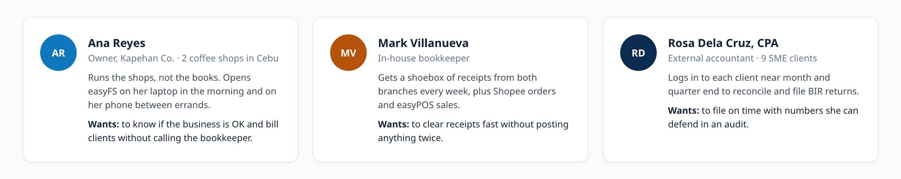
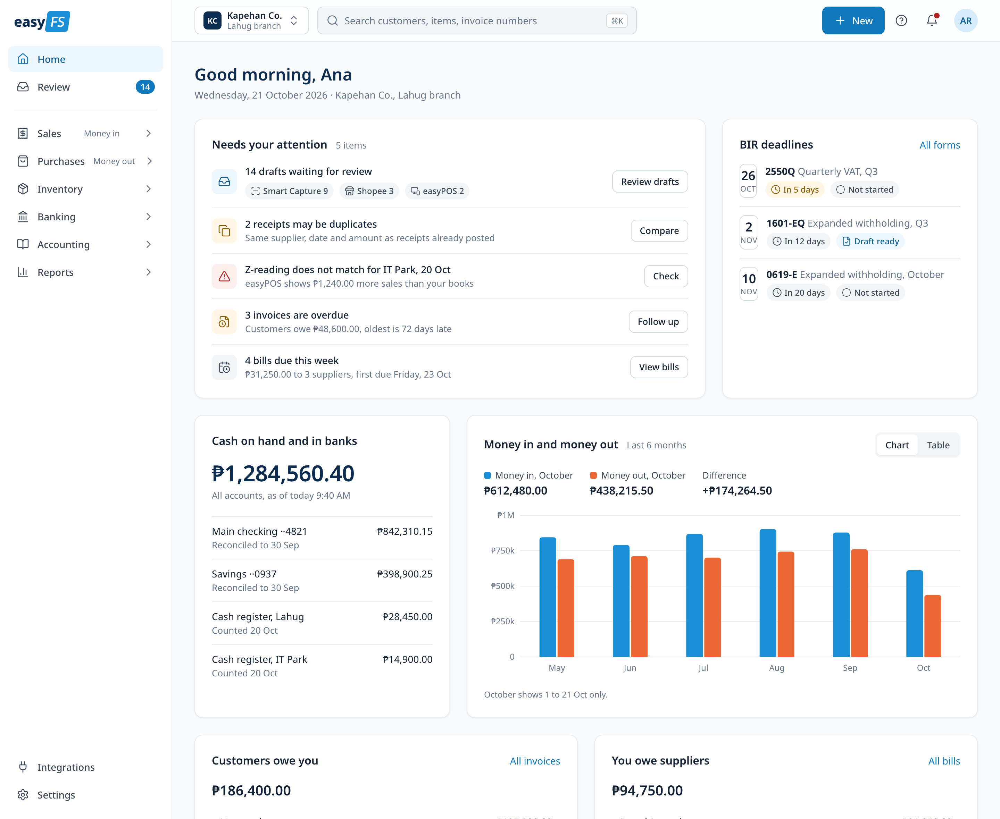
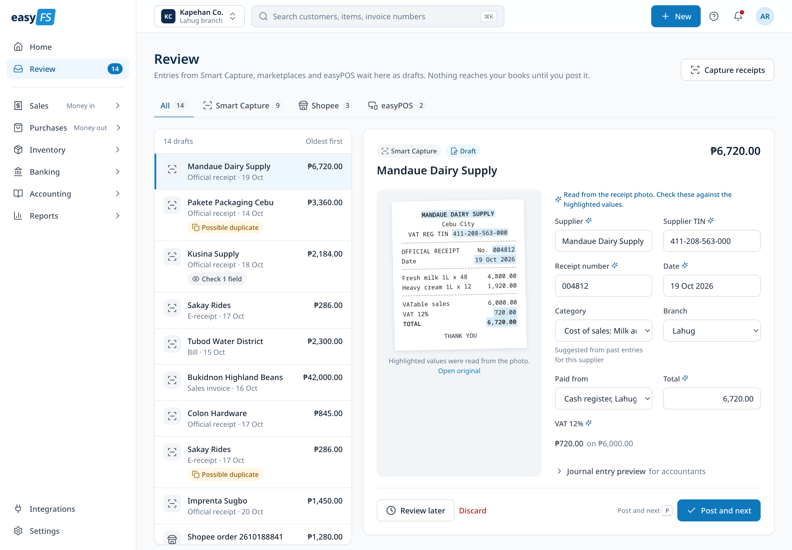
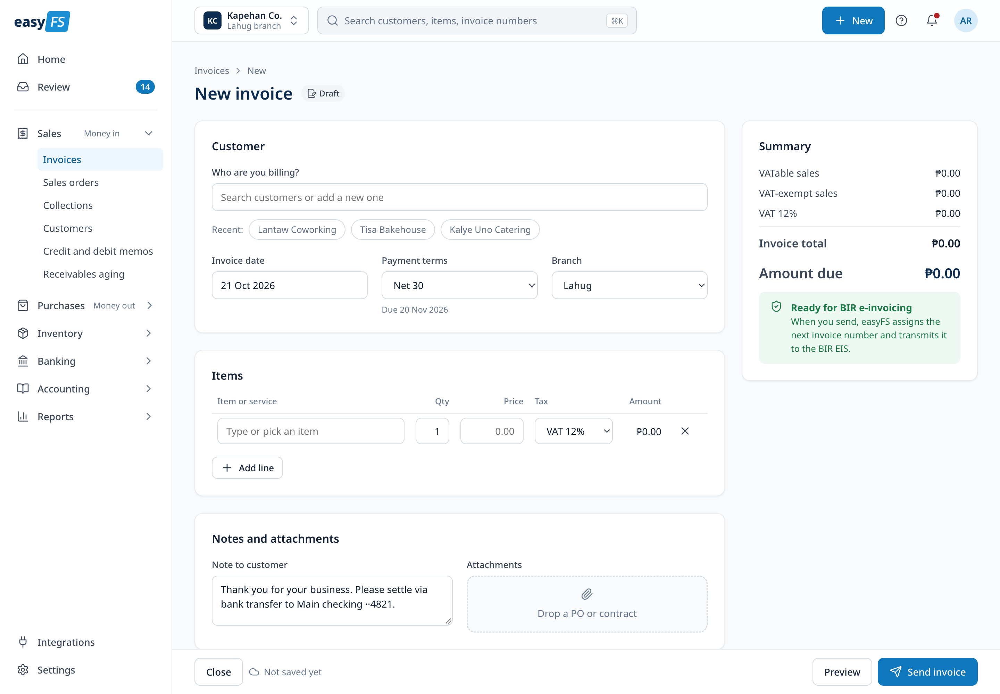
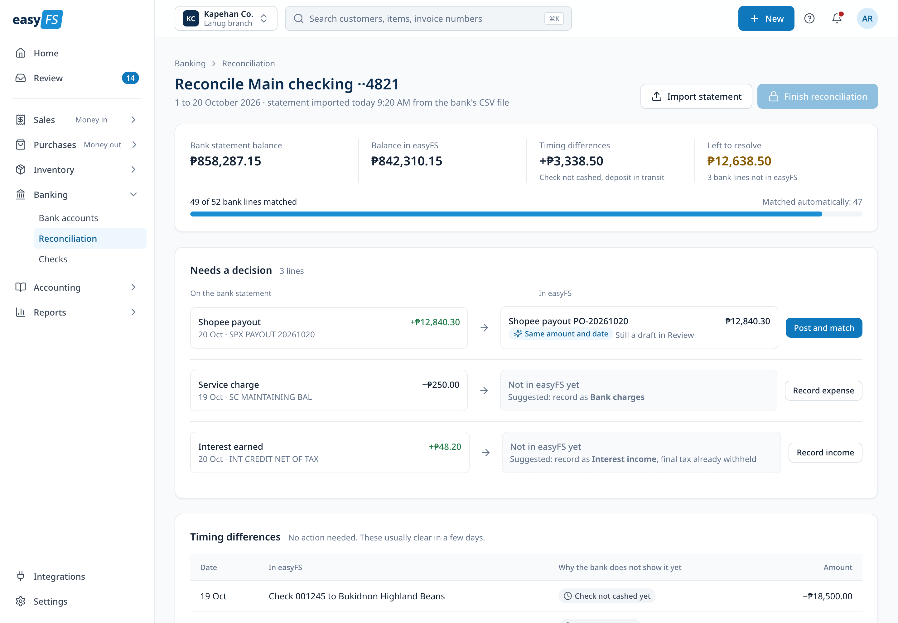
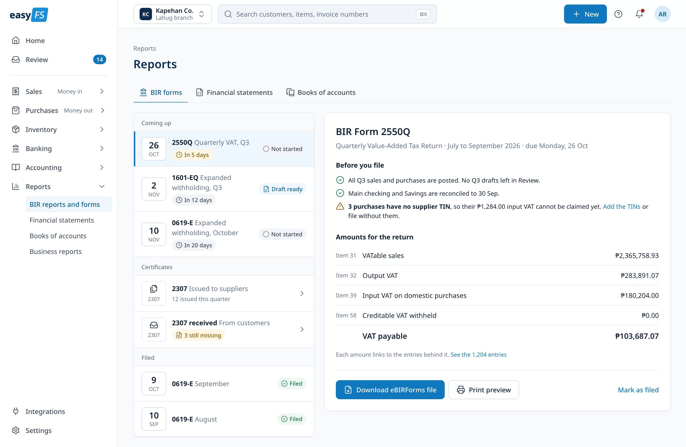
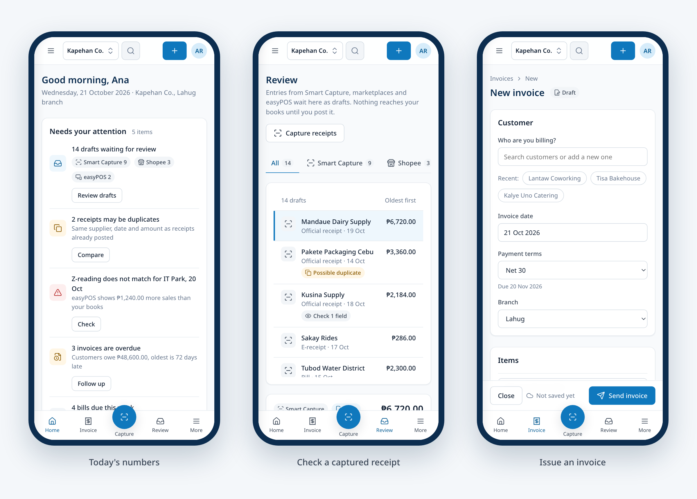

Accounting that tells you what to do next
easyFS is cloud accounting for Philippine small businesses. I redesigned the web app so an owner can see how the business is doing in one glance, while the bookkeeper and accountant still get every BIR form and journal entry they need.

- Project
- easyFS web app redesign
- Product
- easyFS by Humedit Philippines
- Type
- Self-initiated concept
- Prototype
- 11 linked screens in HTML
- Scope
- User journeys, information architecture, design tokens, components, key screens at desktop and phone, clickable prototype
Overview
Compliance-heavy, but calm.
I designed easyFS while I worked at Humedit. It is a BIR CAS-ready accounting app used by coffee shops, retailers, spas and repair shops, and it covers sales, purchases, inventory, banking, financial statements and BIR forms.
This project is my own redesign of that web app, done after I left. The goal was simple: keep everything an accountant needs, but make the first screen answer the questions an owner actually asks. Where is my money, what needs me today, and when is the next BIR deadline.
I designed it directly in HTML and CSS, with tokens, shared components and one file per screen, so the set doubles as a clickable prototype. Every business, person and amount in it is made up.
Users
One app, three very different days.
easyFS has two kinds of users who rarely want the same screen. Owners want to know if the business is fine and to bill a client without calling anyone. Bookkeepers and accountants encode, reconcile and file, often for several clients at once.
I wrote three personas to keep both sides in view. They are illustrative, based on common small business accounting problems, and still need usability testing to confirm.

User journeys
Five steps each, mapped to the screens.
Each journey follows one persona through the job they do most. Every step records what they do, what they think and how they feel, then names the part of the design that helps and the usability heuristic behind it. I used these maps to decide what each screen had to get right.
What the three journeys share
One place for "what needs me". Drafts before posting, so automation saves typing but people decide what reaches the books. Plain words first, with accounting terms one layer down. Undo instead of confirm for everyday actions. And BIR names, item numbers and due dates kept exact.
Home
Three questions, in order.
Home answers what needs my attention, how much money I have, and how this month is going. The attention list puts five items in priority order, each with one action. BIR deadlines show days left and status. Cash is the single big number on the page, with each account and when it was last reconciled.
The navigation uses the owner's words first: Sales is labelled Money in, Purchases is Money out, and Review carries a live count. The company and branch always show together in the switcher, so nobody posts to the wrong books.

Review
Nothing reaches the books until you post it.
Smart Capture reads receipts and bills, and Shopee, Lazada, TikTok Shop and easyPOS send sales in on their own. All of it lands in one Review queue as drafts. The receipt photo sits beside the fields read from it, with the read values highlighted, and anything unclear is marked "Check 1 field".
Possible duplicates are flagged before they are posted. Post and next has a keyboard shortcut, and a toast with Undo replaces the confirm dialog, so a bookkeeper can clear a week of receipts quickly and still fix a slip in a second.

Invoicing
An invoice an owner can send alone.
New is one button in the top bar. Recent customers sit under the search, and their terms and withholding come from the customer record. The summary on the right updates as lines change and spells out VATable sales, VAT and the amount due, so a lower amount due never looks like a mistake.
The form also shows it is ready for BIR e-invoicing: when the invoice is sent, easyFS assigns the next number and transmits it to the BIR EIS.

Month end
Reconcile, then file with no surprises.
Bank reconciliation starts from the imported statement. Most lines match on their own; the rest sit next to a suggested entry with one action each, and "Left to resolve" counts down until Finish unlocks. Timing differences such as an uncashed check are explained, not flagged.
Each BIR form opens with a "Before you file" checklist. It confirms the quarter is posted and reconciled, and says what a problem costs, for example input VAT that cannot be claimed yet because three purchases have no supplier TIN. Every figure is labelled with its form item and links to the entries behind it.


Phone
Desktop first, phone for quick tasks.
The full product is designed for 1440 first. On a phone, people mostly do three things: capture a receipt, issue an invoice and check today's numbers. The bottom bar is built around those, with Capture in the middle so a receipt can be snapped before the paper fades.

Next
Assumptions to test.
The journeys are hypotheses, so the next step is testing them with three to five owners, bookkeepers and accountants. The questions I would measure first:
Do owners understand amount due versus invoice total without help? Is highlighting values on the receipt enough for bookkeepers to trust Smart Capture? Is Undo a safe replacement for confirm dialogs when posting? Does a readiness checklist reduce late or amended BIR returns?
Let’s talk
I’d love to tell you more on a call.
There’s more to this project than fits on one page. If you’re interested, I’m happy to walk you through the prototype, the decisions and the trade-offs.